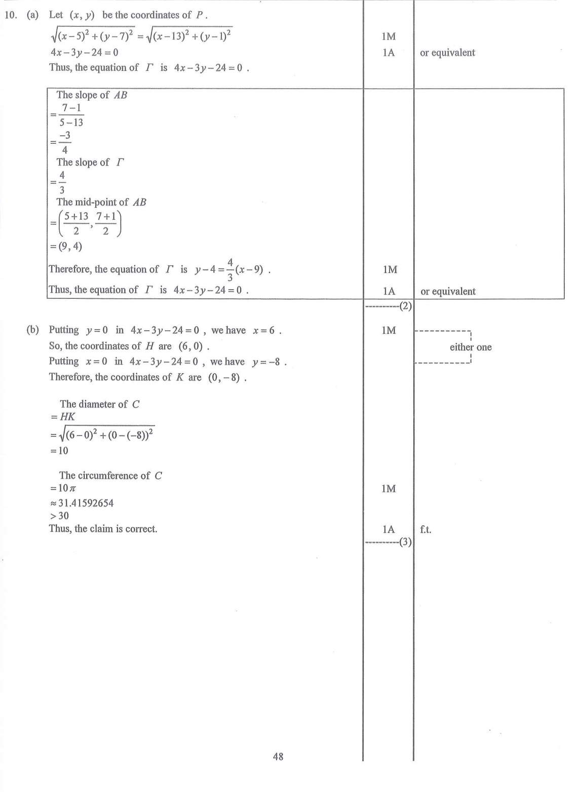

2016 DSE 數學 P1 Q10 答案＋詳解
題目（中文卷）
點 ( A ) 及點 ( B ) 的坐標分別為 ( (5,7) ) 及 ( (13,1) ) 。設 ( P ) 為直角坐標平面上的一動點使得 ( P ) 與 ( A ) 及 ( B ) 等距。將 ( P ) 的軌跡記為 ( \Gamma ) 。
(a) 求 ( \Gamma ) 的方程。 (2 分)
(b) ( \Gamma ) 與 ( x ) 軸及 ( y ) 軸分別相交於 ( H ) 及 ( K ) 。將原點記為 ( O ) 。設 ( C ) 為通過 ( O ) 、( H ) 及 ( K ) 的圓。某人宣稱 ( C ) 的圓周超過 30 。該宣稱是否正確？試解釋你的答案。 (3 分)
English version（英文卷題目）
The coordinates of the points ( A ) and ( B ) are ( (5, 7) ) and ( (13, 1) ) respectively. Let ( P ) be a moving point in the rectangular coordinate plane such that ( P ) is equidistant from ( A ) and ( B ). Denote the locus of ( P ) by ( \Gamma ).
(a) Find the equation of ( \Gamma ). (2 marks)
(b) ( \Gamma ) intersects the ( x )-axis and the ( y )-axis at ( H ) and ( K ) respectively. Denote the origin by ( O ). Let ( C ) be the circle which passes through ( O ), ( H ) and ( K ). Someone claims that the circumference of ( C ) exceeds 30. Is the claim correct? Explain your answer. (3 marks)
官方評卷參考（Marking Scheme）

考評報告
（a）良好。很多考生能得出 $\Gamma$ 的方程,但部分考生誤以為 $\Gamma$ 通過點 $A$ 及點 $B$。 （b）平平。只有部分考生能求得 $C$ 的圓周,並能得出正確的結論,而很多考生忽略了 $HK$ 為 $C$ 的一直徑。